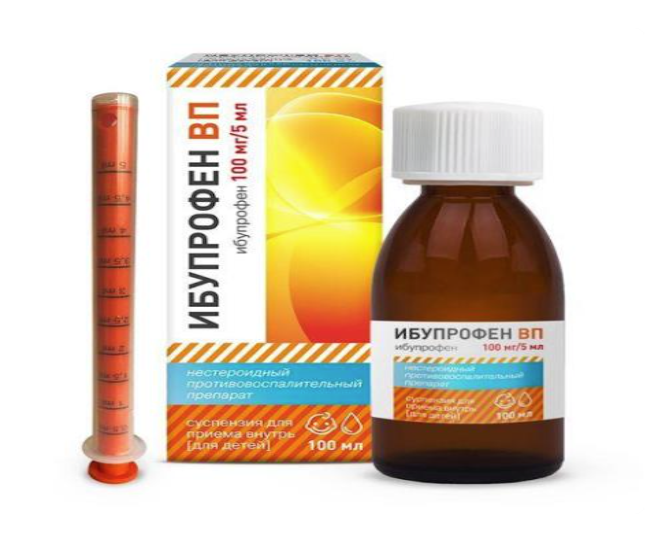
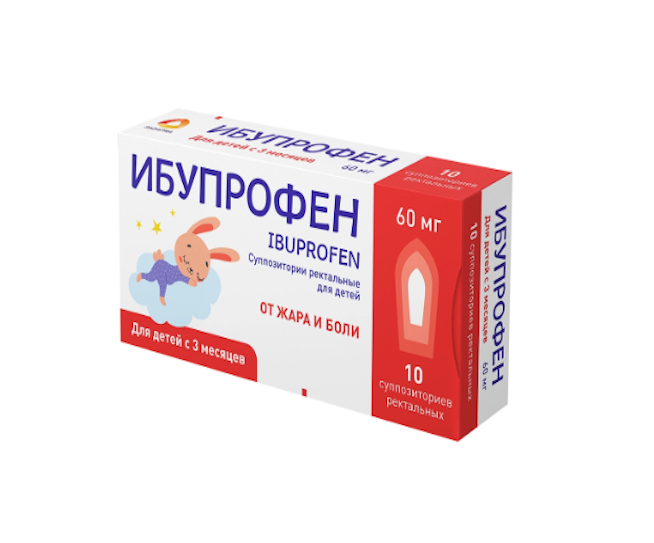

«Ибупрофен ВП» — суспензия для приёма внутрь для детей из группы нестероидных
противовоспалительных препаратов (НПВП). Действующее вещество — ибупрофен, который
оказывает обезболивающее, жаропонижающее и противовоспалительное действие.

Суппозитории «Ибупрофен» — нестероидный противовоспалительный препарат (НПВП) в форме
ректальных суппозиториев для детей. Действующее вещество — ибупрофен (60 мг).
✕